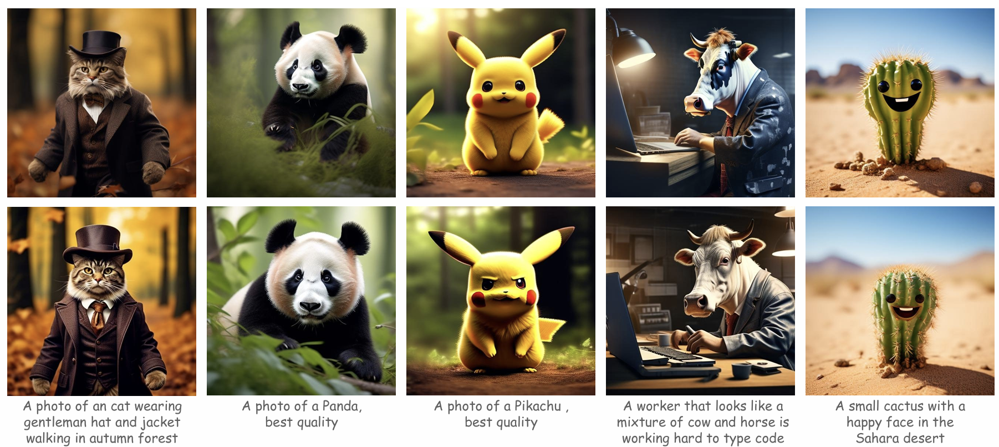
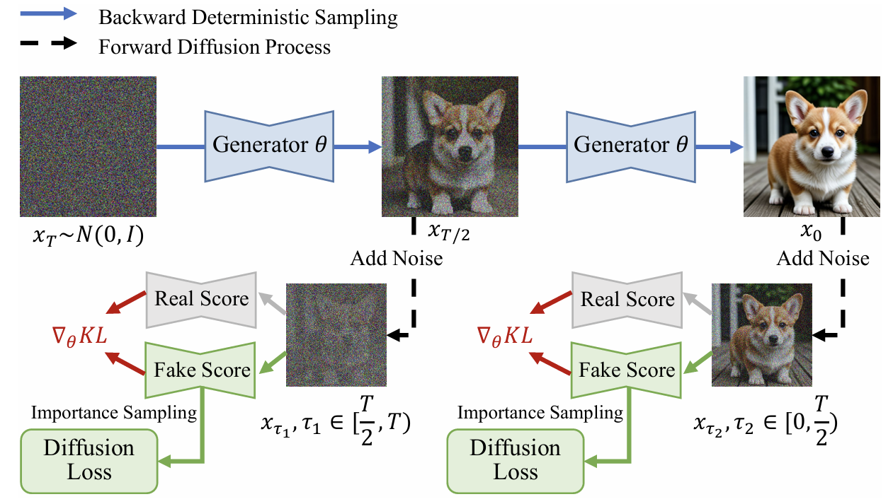
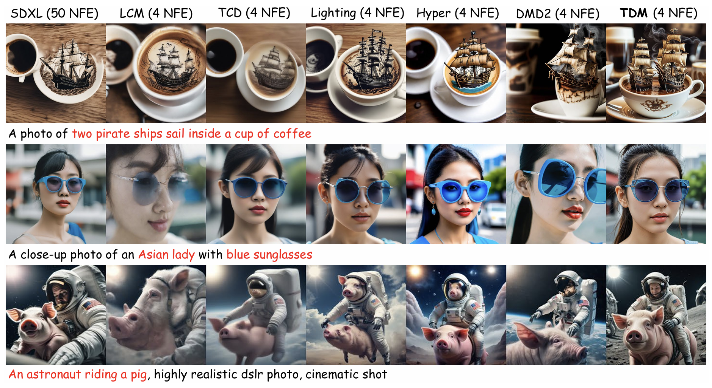
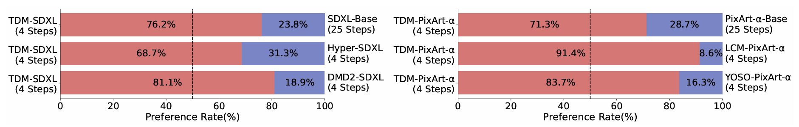

The Left is generated by CogVideoX-2B (100 NFE) on a single 4090 by around 90s. At the same time, our TDM (4 NFE) can generate 25 videos, as shown on the right! 25 times faster without performance degradation!
Abstract
Accelerating diffusion model sampling is crucial for efficient AIGC deployment.
While diffusion distillation methods---based on distribution matching and trajectory matching --- reduce sampling to as few as one step, they fall short on complex tasks like text-to-image generation.
Few-step generation offers a better balance between speed and quality, but existing approaches face a persistent trade-off: distribution matching lacks flexibility for multi-step sampling, while trajectory matching often yields suboptimal image quality.
To bridge this gap, we propose learning few-step diffusion models by Trajectory Distribution Matching (TDM), a novel framework that combines the strengths of distribution and trajectory matching.
Our method introduces a data-free score distillation objective, aligning the student's trajectory with the teacher's at the distribution level.
Further, we develop a sampling-steps-aware objective that decouples learning targets across different steps, enabling more adjustable sampling.
This approach supports both deterministic sampling for superior image quality and flexible multi-step adaptation, achieving state-of-the-art performance with remarkable efficiency.
Our model, TDM, outperforms existing methods on various backbones, such as SDXL and PixArt-\(\alpha\), delivering superior quality and significantly reduced training costs.
In particular, our method distills PixArt-\(\alpha\) into a 4-step generator that outperforms its teacher on real user preference at 1024 resolution. This is accomplished with 500 iterations and 2 A800 hours---a mere 0.01% of the teacher's training cost.
User Study Time!

Which one do you think is better? Some images are generated by Pixart-\(\alpha\) (50 NFE). Some images are generated by TDM (4 NFE), distilling from Pixart-\(\alpha\) in a data-free way with merely 500 training iterations and 2 A800 hours. All images are generated from the same initial noise.
Click for answer
Answers of TDM's position (left to right): bottom, bottom, top, bottom, top.
Methodology
Our TDM builds non-trival connection between trajectory distillation and distribution matching, deilivering a new distillation paradigm: Trajectory Distribution Matching.
TDM combines the strengths of distribution and trajectory matching. Our method introduces a data-free score distillation objective, aligning the student's trajectory with the teacher's at the distribution level.
Benefiting from the proposed design, our method possesses the following advantages:
1) Supporting various ODE samplers for both training and inference,
2) A ultra fast training process,
3) Extremely fast high-quality few-step generation: TDM can suparrs the teacher without extra high-quality data in real user preference!

Qualitative Comparison
We present the qualitative comparison to existing SOTA methods below.
It is clear that our method has better visual quality and text-image alignment compared to competing baselines and even the teacher diffusion with 25 steps.

Real User Preference
To further verify the effectiveness of our proposed method, we conduct an extensive user study across different backbones.
The results are shown in below: Our method clearly outperforms the teacher diffusion and other most competing methods in a image-free way.

Project page template is borrowed from DreamBooth.